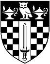

Return link to the main menu
Founded in 1823 as the London Mechanics' Institution, Birkbeck College was incorporated into the University of London by Royal Charter in 1926. Students registered for degrees at the College are Internal Students of the University of London. Unlike other Colleges of the University of London, Birkbeck not only provides a range of full-time postgraduate taught courses and research programmes for UK and international students, but has a special mission in meeting the needs of over 5000 mature part-time evening students reading for first or higher degrees.
The main buildings of the College are situated in the Bloomsbury area of central London, a short distance away from the British Museum. London Underground stations (Goodge Street, Russell Square, Warren Street, Euston Square, & Tottenham Court Road) and Euston mainline station are within easy reach. King's Cross and St. Pancras stations are 15-20 minutes walk from the college. Several departments share resources with University College, London, which is adjacent to Birkbeck College. Access to the printed scientific literature is mainly provided by University College's DMS Watson science library, which is less than 5 minutes walk from the main building. In addition, the new British Library is approx. 15 minutes walk from the college.
More information on the college may be obtained via the World Wide Web at http://www.bbk.ac.uk/. The postal address is Birkbeck College, Malet Street, London WC1H 7HX, U.K. The central switchboard telephone is +44 (0) 20-7631-6000.
This is a multidisciplinary department including physicists, chemists, crystallographers, biochemists, and molecular biologists all with an interest in microscopic structure. The diversity of the department's research is illustrated by the range of structures studied - from materials and molecular chemistry on the one hand, e.g. zeolites and cements, to structural molecular biology on the other, e.g. the structures of eye lens proteins, chaperones, and membranes proteins. The quality of the departmental research is recognised by the Higher Education Funding Council for England, which has consistently rated it Grade 5 for research of international excellence. The new Joint Research School for Biomolecular Sciences provides a strong link between the Department of Crystallography and the Department of Biochemistry, University College.
The research activities have broad applications in industry, not only in drug, vaccine, and protein design and engineering, but also in many areas of materials science. Significant support for our experimental base comes from both industry and charities which have contributed to the refurbishment of the Rayne-Wolfson laboratory for biochemistry and biotechnology, the new Glaxo-Wellcome visualisation laboratory equipped with state of the art graphic workstations, and new laboratories for material science and electron microscopy. The college has shown an equal commitment to research with the recent building of the Rosalind Franklin laboratory for protein engineering.
The department has excellent X-ray facilities including several rotating anodes equipped with image plates, CAD4 diffractometers, and modern powder diffractometers, with both low- and high-temperature sample environment stages. These are complemented by TEM, cryo-TEM, and SEM microscopy facilities.
The department has pioneered the teaching of courses via the Internet: The Principles of Protein Structure on the Internet, Protein Crystallography on the Web, and Powder Diffraction on the Web are three of the courses that use Internet technology. This compilation of computer-generated diagrams and tables of the crystallographic space groups is a direct result of the development of the Web-based course material. More information on the department and its courses may be obtained via the World Wide Web at http://www.cryst.bbk.ac.uk/.